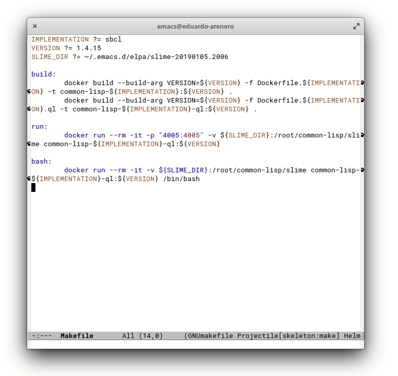
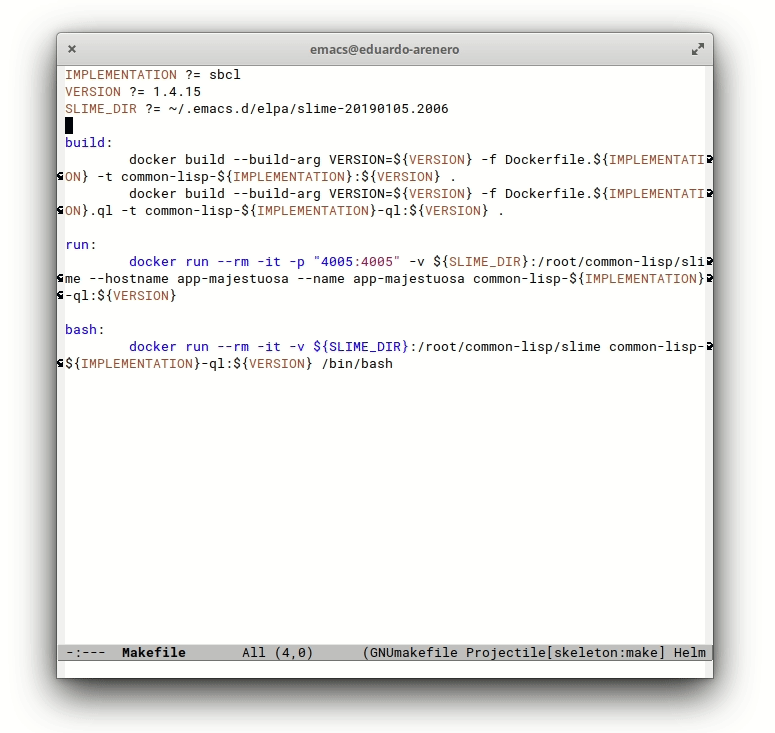

Common Lisp y Docker Parte 1
TL;DR: Esta es una guía para usar Lisp en un ambiente de desarrollo basado en Docker, este repositorio incluye todo el código presentado aqui.
Hace unos cuantos meses comencé a escribir una aplicación web en Common Lisp. Era un sistema para gestionar una biblioteca, con el cual se podía comunicar a través de un servidor con una RESTful API.
En mi trabajo había estado trabajando con Docker y la idea de tener un ambiente reproducible para deployar el programa al servidor de pruebas y a producción me parecía atracivo (aunque quizá era algo un poco overkill para este caso de uso).
Me propuse extender la idea del ambiente reproducible a la etapa de desarrollo, quería tener el programa corriendo en un contenedor Docker en mi ambiente local, junto con otros servicios como la base de datos, los servidores de desarrollo de un par de frontends, así como NGINX como reverse proxy de todo el sistema.
El flujo de trabajo consistia en:
1.- Levantar los contenedores:
make up
2.- Abrir en el navegador los frontends, dirigiéndome a las direcciones:
- http://admin.dominio/ para el panel de administración
- http://dominio/ para el sitio principal
3.- Abrir Postman e interactuar con la API usando:
- http://api.dominio/
4.- Abrir Emacs y conectarme a la imagen de Lisp dentro del contenedor
de la API usando slime-connect.
Para este paso, es posible no tener una implementación de Lisp en tu ambiente local, ya que Lisp corre en el contenedor y solo se usa SLIME para interactuar con esa instancia. La ventaja de esto es que puedes tener varios contenedores de Lisp cada uno con distintas implementaciones y versiones del lenguaje.
5.- Abrir una ventana con los logs de la aplicación:
make logs
6.- Programar alguna funcionalidad o arreglaba algún bug.
7.- Hacer un git push a una branch, la cual corria pruebas unitarias
en GitLab, así como linters para el
código. Y al momento de hacer merge de esta branch a master se
ejecutaba un pipeline de manera automática para deployar a producción,
el cual era un droplet de Digital Ocean con docker instalado.
Los contenedores en los que corria el programa en producción estaban configurados de diferente manera a los contenedores del ambiente de desarrollo, pero en general funcionaban de manera similar.
Objetivo
En esta entrada del blog presento una guía para tener la base del flujo de trabajo anterior, al final de esta parte I tendremos:
- Un archivo
Makefileque será nuestro “recetario” para construir las imágenes de Docker e interactuar con docker compose. - Dockerfiles sencillos para construir imágenes para SBCL y CCL, dos implementaciones libres de Common Lisp.
- Dockerfiles sencillos para tener Quicklisp listo para usarse tanto para SBCL como para CCL.
- Una configuración de Docker Compose para levantar el contenedor de Lisp.
- Configuración especial para Emacs y Slime
- Archivo de inicialización para el programa en lisp.
Antes de comenzar, asegúrate de instalar Emacs, Make, Docker y Docker Compose. En esta entrada muestro la configuración de Emacs que usaré para escribir esta guía.
Para darle contexto a los archivos que se irán creando, este es el listado que tengo en mi máquina local:
/home/eduardo/
└── proyecto-magnifico
├── app-majestuosa
│ └── código de la aplicación en Lisp ...
├── Dockerfile.ccl
├── Dockerfile.ccl.ql
├── Dockerfile.sbcl
├── Dockerfile.sbcl.ql
├── docker-compose.yml
├── Makefile
├── swank-server.lisp
├── .dir-locals.el
└── .projectile
Imágenes de Docker
No soy un experto en Docker, y probablemente los Dockerfiles de esta guía tengan mucho por donde mejorar. Si quieres ver imágenes mas robustas para Lisp, pudieras darle una leída a los repositorios de daewok, recuerdo haber leido sus Dockerfiles para crear los mios.
Preparando el recetario
Antes de comenzar a escribir Dockerfiles, comenzemos con el Makefile
el cual nos servirá tanto para ejecutar comandos complicados, como
para proveer una pequeña capa de abstracción para la implementación y
versión de Lisp que deseamos utilizar.
Primero definimos de manera condicional las variables IMPLEMENTATION
y VERSION, al usar ?= estamos estableciendo valores por default
para estas variables, es decir, si corremos make estas variables
tendran sus valores por defecto, pero siempre se podrá especificar,
por ejemplo, IMPLEMENTATION=ccl VERSION=1.11.5 make.
IMPLEMENTATION ?= sbcl
VERSION ?= 1.4.15
Ahora definimos una tarea para construir dos imágenes de Docker:
- La imagen base con la implementación especificada ya instalada.
- La imagen con quicklisp lista para instalar algunos paquetes de terceros.
IMPLEMENTATION ?= sbcl
VERSION ?= 1.4.15
build:
docker build --build-arg VERSION=${VERSION} -f Dockerfile.${IMPLEMENTATION} -t common-lisp-${IMPLEMENTATION}:${VERSION} .
docker build --build-arg VERSION=${VERSION} -f Dockerfile.${IMPLEMENTATION}.ql -t common-lisp-${IMPLEMENTATION}-ql:${VERSION} .
Haciendo una sustitución de las variables por los valores por defecto podremos entender mejor lo que hacen estos comandos:
docker build --build-arg VERSION=1.4.15 -f Dockerfile.sbcl -t common-lisp-sbcl:1.4.15 .
y
docker build --build-arg VERSION=1.4.15 -f Dockerfile.sbcl.ql -t common-lisp-sbcl-ql:1.4.15 .
El archivo Dockerfile que se utiliza para construir las imágenes depende de la implementación. Y la versión se utiliza para el nombre del tag de la imágen, así como argumento de build.
En esta guía se presentan Dockerfiles para SBCL y para CCL, por lo que necesitamos cuatro Dockerfiles en total:
- Dockerfile.sbcl
- Dockerfile.sbcl.ql
- Dockerfile.ccl
- Dockerfile.ccl.ql
Imágenes para Steele Bank Common Lisp
Dockerfile.sbcl
Esta imagen se basa en debian:stretch-slim la cual es una versión
reducida de Debian, pero no tan reducida como las versiones Alpine.
Recordando el build-arg que se utiliza en el comando para construir
la imagen, se declara VERSION como un argumento que usaremos dentro
del Dockerfile.
FROM debian:stretch-slim
ARG VERSION
Posteriormente, se procede a instalar algunas dependencias para la compilación de SBCL:
RUN apt-get update \
&& apt-get install -y --no-install-recommends \
ca-certificates \
wget \
build-essential \
zlib1g-dev \
sbcl \
&& rm -rf /var/lib/apt/lists/*
El último elemento en esta lista es sbcl el cual es necesario para
compilar SBCL. Pudieramos usar la versión que incluye el repositorio
de Debian como la implementación de trabajo, sin embargo, la idea es
poder elegir que version de Lisp necesitas para el caso de uso
específico.
Ahora lo que debemos hacer es instruirle a Docker que se ubique en el
directorio /usr/local/src y que consiga la versión de SBCL
especificada en la variable VERSION:
WORKDIR /usr/local/src
RUN wget "http://prdownloads.sourceforge.net/sbcl/sbcl-${VERSION}-source.tar.bz2" \
&& tar xjf sbcl-${VERSION}-source.tar.bz2 \
&& rm -rf sbcl-${VERSION}-source.tar.bz2
El comando de arriba descarga, descomprime y elimina el archivo comprimido correspondiente a la versión de SBCL que deseamos. Ahora falta ubicarnos dentro del directorio extraido y compilar esta versión:
WORKDIR /usr/local/src/sbcl-${VERSION}
RUN sh make.sh --prefix=/usr/local --fancy \
&& sh install.sh
Para evitar tener una imagen con programas innecesarios, eliminamos la versión de SBCL que utilizamos para compilar la versión especificada:
RUN apt-get remove --purge -y \
sbcl \
&& apt-get autoremove -y \
&& rm -rf /var/lib/apt/lists/*
Como último paso, nos ubicamos en el directorio /root/common-lisp y
establecemos el comando principal de la imagen como sbcl:
WORKDIR /root/common-lisp
CMD ["sbcl"]
La elección de este directorio no es arbitraria, resulta que cuando se
usa quicklisp para encontrar sistemas ASDF, se escanea el path
~/common-lisp, el cuál dentro del contenedor será
/root/common-lisp.
Dockerfile.sbcl.ql
Para la imagen con Quicklisp utilizamos la variable VERSION para determinar el nombre de la imagen “padre”, es decir, la imagen que se construye con el Dockerfile definido en la anterior sección:
ARG VERSION
FROM common-lisp-sbcl:${VERSION}
Ahora procedemos a instalar dependencias que vayan a requerir los
sistemas que instalemos por medio de quicklisp, como ejemplo, en esta
imagen instalaremos libffi-dev para los sistemas que tengan alguna
interacción con bibliotecas de C y libssl-dev el cual es requerido
por algunos servidores web:
RUN apt-get update \
&& apt-get install -y --no-install-recommends \
libffi-dev \
libssl-dev \
&& rm -rf /var/lib/apt/lists/*
Teniendo las dependencias instaladas, nos ubicamos en el directorio
/root y descargamos e instalamos quicklisp:
WORKDIR /root
RUN wget http://beta.quicklisp.org/quicklisp.lisp
RUN sbcl --no-sysinit --no-userinit --non-interactive \
--load ./quicklisp.lisp \
--eval "(quicklisp-quickstart:install)" \
--eval "(ql::without-prompting (ql:add-to-init-file))"
Ahora, cuando corramos sbcl podremos utilizar la función
ql:quickload para cargar sistemas de terceros y sistemas propios.
Para finalizar, volvemos a establecer como el directorio actual a
/root/common-lisp y se agrega el archivo swank-server.lisp como un
programa de ejemplo para estas imágenes.
WORKDIR /root/common-lisp
ADD swank-server.lisp .
CMD ["sbcl", "--load", "swank-server.lisp"]
swank-server.lisp
Este archivo de arranque va a cargar el sistema swank el cual
permite que slime se comunique con una imagen de Lisp, posteriormente
va a correr un servidor de swank y mantenerlo escuchando a conexiones.
(ql:quickload :swank)
(setf swank:*globally-redirect-io* t)
(setf swank::*loopback-interface* "0.0.0.0")
(swank:create-server :dont-close t)
Usualmente escribo un archivo muy similar a este, que además levante un servidor HTTP o ejecute algun servicio.
Imágenes para Clozure Common Lisp
Las imágenes para CCL son muy similares a las de SBCL. La diferencia principal es que CCL distribuye tanto los binarios como el código fuente en un mismo paquete, por lo que solo debemos hacer un rebuild de la implementación para verificar que el sistema se encuentre totalmente funcional.
Dockerfile.ccl
FROM debian:stretch-slim
ARG VERSION
RUN apt-get update \
&& apt-get install -y --no-install-recommends \
ca-certificates \
wget \
build-essential \
m4 \
&& rm -rf /var/lib/apt/lists/*
WORKDIR /usr/local/src
RUN wget "https://github.com/Clozure/ccl/releases/download/v${VERSION}/ccl-${VERSION}-linuxx86.tar.gz" \
&& tar xvzf ccl-${VERSION}-linuxx86.tar.gz \
&& rm -rf ccl-${VERSION}-linuxx86.tar.gz
WORKDIR /usr/local/src/ccl
RUN ./lx86cl64 --no-init --eval "(rebuild-ccl :full t)" --eval "(quit)"
RUN ln -s /usr/local/src/ccl/scripts/ccl64 /usr/local/bin/ccl \
&& ln -s /usr/local/src/ccl/scripts/ccl /usr/local/bin/ccl32
WORKDIR /root/common-lisp
CMD ["ccl"]
Dockerfile.ccl.ql
Este archivo es casi casi igual que la versión de SBCL, lo único que cambia son los argumentos al cargar Quicklisp:
ARG VERSION
FROM common-lisp-ccl:${VERSION}
RUN apt-get update \
&& apt-get install -y --no-install-recommends \
libffi-dev \
libssl-dev \
&& rm -rf /var/lib/apt/lists/*
WORKDIR /root
RUN wget http://beta.quicklisp.org/quicklisp.lisp
RUN ccl --no-init --load ./quicklisp.lisp \
--eval "(quicklisp-quickstart:install)" \
--eval "(ql::without-prompting (ql:add-to-init-file))"
WORKDIR /root/common-lisp
ADD swank-server.lisp .
CMD ["ccl", "--load", "swank-server.lisp"]
Construyendo las imágenes
A pleno inicio del 2019, la última versión de SBCL es la 1.4.15, mientras que la última versión de CCL es la 1.11.5, para probar que el código que hemos escrito funciona correctamente, ejecutamos:
IMPLEMENTATION=sbcl VERSION=1.4.15 make build
Y posteriormente:
IMPLEMENTATION=ccl VERSION=1.11.5 make build
Este proceso puede tardar algo de tiempo, en la máquina virtual con la que verifico los pasos de esta guía obtuve los siguientes tiempos:
Para IMPLEMENTATION=sbcl VERSION=1.4.15 make build:
0.36s user 0.26s system 0% cpu 8:59.38 total
Para IMPLEMENTATION=ccl VERSION=1.11.5 make build:
0.36s user 0.13s system 0% cpu 2:24.35 total
La imagen de CCL fue mas rápida de construir en parte porque se
reutilizó la imagen de debian:stretch-slim que ambas utilizan.
Probando las imágenes
En las siguientes secciones iremos creando más tareas en el
Makefile, para probar que la imagen base corre de manera normal,
utilizamos:
run:
docker run --rm -it common-lisp-${IMPLEMENTATION}:${VERSION}
Y para probar ambas implementaciones, se ejecuta:
IMPLEMENTATION=sbcl VERSION=1.4.15 make run
y
IMPLEMENTATION=ccl VERSION=1.11.5 make run
Para probar las imágenes con quicklisp, uno pudiera pensar que basta
modificar la tarea run de la siguiente manera:
run:
docker run --rm -it -p "4005:4005" common-lisp-${IMPLEMENTATION}-ql:${VERSION}
El puerto 4500 lo habilitamos para poder conectarnos al servidor Swank
que se levanta en swank-server.lisp.
Intenta correr esta tarea y verás como Swank es descargado y
compilado. Al ejecutar el comando slime-connect desde Emacs,
eligiendo localhost y 4500 como los parámetros de conexión, es
posible que puedas lograr conectarte a la imagen de Lisp que está
corriendo en el contenedor de Docker… Pero no necesariamente será
este el caso. De hecho, si no pudiste establecer la conexión, ya
tendrás una idea del problema.
Resulta que Swank y Slime se distribuyen en el mismo paquete pero de
diferente manera, en Emacs pudimos haber instalado Slime desde los
repositorios MELPA, mientras que en el contenedor, lo descargamos
desde Quicklisp (esto sucede de forma automática al correr
(ql:quickload :swank)). Esto puede provocar que la versión de Swank
usada en el contenedor sea distinta a la versión de Slime en
Emacs. Incluso si hubieras instalado Slime usando el sistema
quicklisp-slime-helper de Quicklisp, es posible que tengas una
versión distinta en algún contenedor.
Para arreglar este problema, podemos montar un volúmen de Docker del
directorio de Slime en la máquina local a un directorio que pueda
encontrar Quicklisp dentro del contenedor, de tal manera, que cuando
se haga (ql:quickload :swank) en swank-server.lisp, se encontrará
el sistema local (con la versión sincronizada a Emacs) y no se
necesitará descargar desde el repositorio de Quicklisp.
El Makefile actualizado para abordar esta situación se vería así:
IMPLEMENTATION ?= sbcl
VERSION ?= 1.4.15
SLIME_DIR ?= ~/.emacs.d/elpa/slime-20190105.2006
build:
docker build --build-arg VERSION=${VERSION} -f Dockerfile.${IMPLEMENTATION} -t common-lisp-${IMPLEMENTATION}:${VERSION} .
docker build --build-arg VERSION=${VERSION} -f Dockerfile.${IMPLEMENTATION}.ql -t common-lisp-${IMPLEMENTATION}-ql:${VERSION} .
run:
docker run --rm -it -p "4005:4005" -v ${SLIME_DIR}:/root/common-lisp/slime common-lisp-${IMPLEMENTATION}-ql:${VERSION}
El valor de la variable SLIME_DIR debe de ser el directorio donde
tienes instalado Slime en tu máquina local. Yo instalé slime por medio
de MELPA, pero tu directorio puede estar en otro lado, por ejemplo, si
instalaste Slime por medio de Quicklisp, el directorio será algo como
~/quicklisp/dists/quicklisp/software/slime-v2.22.
Si dudas sobre el directorio donde está instalado Slime, puedes
evaluar la siguiente expresión en Emacs con M-::
(file-name-directory (locate-library "slime"))
Otro aspecto que cambia en el Makefile es el comando para correr el
contenedor. Se monta un volúmen que asocia SLIME_DIR en la máquina
local, con el directorio /root/common-lisp/slime en el
contenedor. Al establecer esta sincronización entre directorios,
cuando Quicklisp busque el sistema de Swank, lo encontrará en
/root/common-lisp/slime y no se necesitará descargar la versión de
Quicklisp.
A partir de este punto en la guía, utilizaremos los valores por
default del Makefile para mantener los comandos cortos.
Para verificar que esta carpeta es montada correctamente, agregamos
una tarea adicional al Makefile:
bash:
docker run --rm -it -v ${SLIME_DIR}:/root/common-lisp/slime common-lisp-${IMPLEMENTATION}-ql:${VERSION} /bin/bash
Ejecutando make bash corremos el contenedor, pero en lugar de
comenzar en el REPL de Lisp, comenzamos en una sesión de bash.
Puedes navegar al directorio /root/common-lisp/slime y verificar que
son los mismos archivos presentes en el directorio SLIME_DIR en la
máquina local.
Ejecutando make run podrás levantar el servidor Swank y conectarte
desde Emacs sin tener el conflicto entre versiones de Swank y Slime.
Mejor integración con Emacs
La configuración que se ha presentado hasta el momento tiene una grán
falla, sin embargo, no tiene que ver tanto con la configuración de
Docker. Resulta que Slime tiene una funcionalidad para navegar a
través de definiciones de funciones y variables usando los comandos
slime-edit-definition (M-.) y slime-pop-find-definition-stack
(M-,). Por ejemplo, si escribimos en el REPL (mapcar ,
posicionamos el cursor en el símbolo mapcar y se inserta la
combinación M-., esperaríamos trasladarnos al código fuente en donde
esta función es definida. Sin embargo, no podemos hacer esto con la
configuración actual.

Cuando intentamos ir a la definición de mapcar nos encontramos con
que Swank comunica correctamente la ubicación en el código fuente,
pero cuando seleccionamos la definición deseada terminamos en un
archivo en blanco. Esto ocurre debido a que Emacs intenta abrir el
archivo en la máquina local y no en el contenedor.
Montar un volúmen no sería muy útil ya que podriamos terminar sobreescribiendo el código fuente en el contenedor o sobreescribiendo alguna versión local de Lisp localmente.
Por fortuna para nosotros, los programadores de Slime pensaron en una solución general, y es que este mismo problema existe cuando nos conectamos a una instancia remota en otra computadora. Emacs, Slime y Lisp tienen la capacidad de permitirle al programador parchar, por ejemplo, una imágen de Lisp en producción, de manera remota y sin detener la ejecución del programa. Por lo que existe un mecanismo para traducir paths.
Desmenuzando el problema
Existe una variable de Slime llamada slime-filename-translations y
su valor consiste en una lista con elementos de la siguiente forma:
(<machine-instance-regexp>
<from-emacs-fn>
<from-lisp-fn>)
__
__
__
Para solucionar este problema de traducción de paths, tendremos que:
- Entender como usar o modificar el valor de
(machine-instance). - Entender como abrir en Emacs un archivo que se encuentra dentro de un contenedor de Docker.
- Establecer un mecanismo sencillo que nos permita extender
slime-filename-translations.
Tomando control de machine-instance
En el CLHS se describe la función machine-instance de la siguiente manera:
Returns a string that identifies the particular instance of the computer hardware on which Common Lisp is running, or nil if no such string can be computed.
En la sesión de Slime, se obtiene que:
CL-USER> (machine-instance)
"98f07c995b1b"
Este valor concuerda con el ID del contenedor:
$ docker container ls
CONTAINER ID IMAGE COMMAND CREATED STATUS PORTS NAMES
98f07c995b1b common-lisp-sbcl-ql:1.4.15 "sbcl --load swank-s…" About an hour ago Up About an hour 0.0.0.0:4005->4005/tcp agitated_joliot
Al analizar la definición de esta función en SBCL, resulta ser que para sistemas basados en UNIX se utiliza el hostname y Docker por defecto elige el container ID como hostname.
Para cambiar este comportamiento, podemos definir otro hostname en el comando run, por ejemplo, el nombre de la aplicación:
run:
docker run --rm -it -p "4005:4005" -v ${SLIME_DIR}:/root/common-lisp/slime --hostname app-majestuosa common-lisp-${IMPLEMENTATION}-ql:${VERSION}
Al correr este comando, se obtiene:
CL-USER> (machine-instance)
"app-majestuosa"
Abriendo archivos en contenedores desde Emacs
El código fuente de Lisp se encuentra dentro del contenedor, por lo que Emacs debe de saber como comunicarse con contenedores de Docker para poder interactuar con ellos.
Para nuestra fortuna, está el paquete docker-tramp el cuál le indica
a Emacs como integrar la funcionalidad de Tramp para contenedores de
Docker.
Del manual de Emacs, se dice que:
TRAMP is for transparently accessing remote files from within Emacs. TRAMP enables an easy, convenient, and consistent interface to remote files as if they are local files. TRAMP’s transparency extends to editing, version control, and dired.
Por ejemplo, si quisieramos abrir en Emacs un archivo que se encuentra
en un servidor remoto con el cual nos podemos comunicar mediante SSH,
se puede escribir el siguiente valor para el comando find-files:
/ssh:usuario@ip-remoto:/path/al/archivo/remoto
De manera similar, con Docker Tramp escribiríamos:
/docker:nombre-contenedor:/path/al/archivo/en/contenedor
Por default, el nombre del contenedor se puede sustituir por el ID del
contenedor y lo anterior funciona perfectamente. Sin embargo, para
nuestro caso de uso es mejor definir el nombre del contenedor antes de
correrlo, ya que el ID del contenedor cambia cada vez que lo tumbamos
y levantamos de nuevo. Para lograr esto, se modifica la tarea run de
la siguiente forma:
run:
docker run --rm -it -p "4005:4005" -v ${SLIME_DIR}:/root/common-lisp/slime --hostname app-majestuosa --name app-majestuosa common-lisp-${IMPLEMENTATION}-ql:${VERSION}
Ahora ya podemos abrir archivos dentro del contenedor:

Traductor de archivos para Slime y Docker
Ya estamos listos para terminar de integrar Emacs con Docker, solo debemos proveer las instrucciones para traducir archivos de local al contenedor y viceversa.
Escribí una función llamada docker-slime-translation que funciona
para las convenciones que hemos adoptado en esta guía. Puedes
modificarla para tus propias necesidades si lo deseas:
(defun docker-slime-translation (app-name)
(lexical-let ((docker-tramp-prefix (concat "/docker:" app-name ":"))
(docker-prefix "/root/common-lisp/")
(local-prefix (projectile-project-root)))
(list (concat "^" app-name "$")
`(lambda (emacs-filename)
(if (string-prefix-p ,docker-tramp-prefix emacs-filename)
(string-remove-prefix ,docker-tramp-prefix emacs-filename)
(concat ,docker-prefix (string-remove-prefix ,local-prefix emacs-filename))))
`(lambda (lisp-filename)
(if (string-prefix-p ,docker-prefix lisp-filename)
(concat ,local-prefix (string-remove-prefix ,docker-prefix lisp-filename))
(concat ,docker-tramp-prefix lisp-filename))))))
Esta función la utilizo para crear un elemento para
slime-filename-translations.
Suponiendo que el argumento app-name es la cadena de caracteres
"app-majestuosa", obtendremos las siguientes componentes:
La expresión regular será:
"^app-majestuosa$"
La cuál hace match únicamente con la cadena de caracteres
"app-majestuosa", ya que el ^ denota el inicio de la cadena y el
$ el final de la cadena.
La función para traducir archivos que vengan de Emacs sería equivalente a la siguiente:
(lambda (emacs-filename)
(if (string-prefix-p "/docker:app-majestuosa:" emacs-filename)
(string-remove-prefix "/docker:app-majestuosa:" emacs-filename)
(concat "/root/common-lisp/" (string-remove-prefix (projectile-project-root) emacs-filename))))
En esta función se manejan dos casos:
- Cuando Emacs está trabajando con un archivo dentro del contenedor
- Otros archivos
En el primer caso, se elimina el prefijo usado por Docker Tramp, el cuál sabemos que se refiere a un archivo dentro del contenedor.
El segundo caso es un poco más engañoso ya que involucra información
que no hemos explorado de manera explícita. Imaginemos que tenemos un
sistema de Lisp que estamos desarrollando, independientemente de la
ubicación del código en la máquina local, al usar Docker deberemos
montar el código usando volumenes de Docker en alguna parte del
contenedor en donde ASDF o Quicklisp puedan encontrarlo. Por
convención, estamos utilizando el path /root/common-lisp para ubicar
nuestros sistemas.
De esta manera, si emacs-filename en la máquina local es
/home/eduardo/repos/proyecto-magnifico/app-majestuosa/src/foo.lisp, y tenemos el volumen:
/home/eduardo/repos/proyecto-magnifico/app-majestuosa:/root/common-lisp/app-majestuosa
Lo que logra este segundo caso es calcular el path:
/root/common-lisp/app-majestuosa/src/foo.lisp
Esto asume que el projectile identifica como raíz del proyecto a
/home/eduardo/repos/proyecto-magnifico, esto se puede lograr
colocando el archivo .projectile en este directorio, o bien, tener
un repositorio de Git en este lugar.
Ahora veamos lo que hace la función para traducir archivos que vengan de la imagen de Lisp, sería una equivalente a la siguiente:
(lambda (lisp-filename)
(if (string-prefix-p "/root/common-lisp/" lisp-filename)
(concat (projectile-project-root) (string-remove-prefix "/root/common-lisp/" lisp-filename))
(concat "/docker:app-majestuosa:" lisp-filename)))
En esta función también se manejan dos casos:
- Cuando el archivo de la imagen de Lisp proviene de
/root/common-lisp/ - Otros archivos del contenedor
Por convención, los volúmenes los montamos en subdirectorios de
/root/common-lisp/, por lo tanto, se asume que si lisp-filename
tiene como prefijo este path, es un archivo del proyecto que se está
desarrollando.
Esto no es necesariamente cierto,
docker-slime-translationtiene mucho por donde mejorar ya que esta guía presenta un mecanismo fragil para comunicar Slime y Docker. En el futuro, presentaré una manera mas robusta de realizar lo mismo.
El segundo caso es para archivos que no tienen el prefijo en cuestión. Por ejemplo, archivos que son parte del código fuente de la implementación de Lisp dentro del contenedor. Para estos archivos, basta con utilizar el prefijo de Docker Tramp para acceder a ellos, justo como se plantea en la anterior sección.
Ahora lo que se tiene que hacer es incluir la definición de
docker-slime-translation en el archivo de inicialización de Emacs y
evaluar la forma.
Para informarle a Emacs de esta traducción, debemos agregar este
elemento a slime-filename-translations, esto lo podemos hacer en el
archivo de inicialización de Emacs, pero el método que he utilizado
ultimamente es en el archivo .dir-locals.el ubicado en la raíz del
proyecto:
((nil . ((eval . (when (not (assoc "^app-majestuosa$" slime-filename-translations))
(push (docker-slime-translation "app-majestuosa")
slime-filename-translations))))))
Cuando visites un archivo de este proyecto, Emacs te preguntará si deseas aceptar este código. Podrás elegir que si, en cuyo caso te preguntará cada vez que abras un archivo del proyecto, o bien, elegir que siempre lo aceptarás, cuya respuesta recordará.
Usando Docker Compose
En esta sección vamos a crear una configuración para docker-compose, esto nos permitirá poder manejar una aplicación con varios contenedores.
Tareas de make para interactuar con docker-compose
Primero adaptamos el Makefile con las tareas up, down, restart y logs:
up:
IMPLEMENTATION=${IMPLEMENTATION} VERSION=${VERSION} SLIME_DIR=${SLIME_DIR} docker-compose up -d
down:
IMPLEMENTATION=${IMPLEMENTATION} VERSION=${VERSION} SLIME_DIR=${SLIME_DIR} docker-compose down
restart: down up
logs:
IMPLEMENTATION=${IMPLEMENTATION} VERSION=${VERSION} SLIME_DIR=${SLIME_DIR} docker-compose logs -f $(filter-out $@,$(MAKECMDGOALS))
La tarea up va a levantar los contenedores que definamos en el
archivo docker-compose.yml, en el cuál usaremos las variables
IMPLEMENTATION, VERSION y SLIME_DIR. El flag -d indica que el
proceso estará detached, lo cual implica que el proceso de Docker
Compose será ejecutado en el background.
La tarea down detiene y elimina los contenedores que hayan sido
levantados con la tarea up, y la tarea restart ejecuta primero
down y posteriormente vuelve a levantar los contenedores con up.
La tarea logs va a mostrar la bitácora de todos los contenedores
levantados por Docker Compose. Esta tarea tiene una especificación que
no es usual:
$(filter-out $@,$(MAKECMDGOALS))
La cuál toma los argumentos que se le proveen a make logs y los
inserta como argumentos al flag -f de docker-compose, de tal
manera que make logs foo bar baz sólo mostrará las bitácoras de los
servicios foo, bar y baz.
El archivo docker-compose.yml
Este archivo tiene una sintaxis diferente a los comandos que hemos mostrado, sin embargo, hay muy poco que explicar:
version: '3'
services:
lisp:
image: "common-lisp-${IMPLEMENTATION}-ql:${VERSION}"
container_name: app-majestuosa
hostname: app-majestuosa
stdin_open: true
tty: true
ports:
- "4005:4005"
volumes:
- "${SLIME_DIR}:/root/common-lisp/slime"
Lo único inusual en este archivo son las configuraciones para
stdin_open y tty. Resulta que cuando se ejecuta make run, Docker
sabe que estamos interactuando desde la línea de comandos y podemos
interactuar mediante la entrada estándar con el contenedor que se
levanta. Sin embargo, cuando Docker Compose levanta los servicios
especificados, no los hace bajo el supuesto que interactuaremos
directamente con ellos y no mantiene este tipo de comunicación por
defecto. Cuando el contenedor termina de levantar el servidor de
Swank, detecta que no hay un mecanismo de interacción con el REPL y
termina el programa:
app-majestuosa | * app-majestuosa exited with code 0
Usando estas dos configuraciones, indicamos que se necesita mantener abierto estos mecanismos de comunicación.
Conclusión
A pesar de no ser una configuración robusta, considero que la cantidad de código presentado en esta guía no fue mucho para tener un ambiente de desarrollo con Emacs, Slime y Docker.
Espero pronto poder mejorar esta configuración para depender menos de convenciones innecesarias. Un problema con la configuración actual es que no se podrá ir a la definición de una función o variable de Swank. Tengo algunas ideas para solucionar este problema que no implica menearle al registro de ASDF.
El código de esta guía se puede consultar en este
repositorio, cualquier
duda, queja o sugerencia al respecto, me puedes mandar un correo
electrónico a eduardo.acye arroba gmail.com.
Piensos para el futuro
Para hacer mas robusta la configuración pienso utilizar algo como:
(json-read-from-string (docker-run "inspect" "app-majestuosa"))
Para obtener la lista de volúmenes montados para app-majesuosa y
poder así establecer correctamente la traducción de archivos. Habiendo
hecho esto, tampoco tendría la limitación de usar monorepos para mis
proyectos (aunque en realidad tampoco me prende usar submódulos).
Actualización 29/01/2019
Escribí un par de funciones para hacer mas amena la interacción de Slime con Docker.
La función docker-container-mounts inspecciona los volúmenes
montados de un contenedor y obtiene una lista de asociación con el
mapeo source/destination:
(defun docker-container-mounts (name)
(read (docker-run "inspect"
name
"--format='({{range $m := .Mounts}}(\"{{$m.Source}}\" . \"{{$m.Destination}}\"){{end}})'")))
El argumento format hace uso del lenguaje de templates de Go (que el
comando docker inspect expone) para evitar parsear el objeto
JSON. De tal manera que si montamos la version local de Slime y un
sistema de lisp en los contenedores, obtenemos:
(docker-container-mounts "app-majestuosa")
=> (("/home/eduardo/quicklisp/dists/quicklisp/software/slime-v2.22" . "/root/common-lisp/slime")
("/home/eduardo/Repos/proyecto-magnifico/app-majestuosa" . "/root/common-lisp/app-majestuosa"))
Esto nos permite hacer más robusta la funcionalidad de traducción de
archivos entre el contenedor de Docker y local. El archivo
.dir-locals ahora contiene:
((nil . ((eval . (add-docker-slime-translation "app-majestuosa")))))
Y la función add-docker-slime-translation se encarga de lo siguiente:
- Si ya hay una traducción definida para
"app-majestuosa"se va a eliminar y se creará una nueva versión. - Al crear una nueva versión de la traducción se inspeccionan los
volúmenes montados del contenedor
"app-majestuosa"utilizandodocker-container-mounts(definida arriba).
Los cambios mas importantes en el código es que en lugar de basarnos
en los prefijos "/root/common-lisp/" y en la raíz del proyecto de
projectile. Utilizamos el mapeo source/destination de los
volumenes montados como prefijos de traducción:
(defun add-docker-slime-translation (name)
(lexical-let ((regexp (concat "^" name "$")))
(when (assoc regexp slime-filename-translations)
(setq slime-filename-translations (delete* regexp slime-filename-translations
:test 'equal :key 'car)))
(push (lexical-let ((docker-tramp-prefix (concat "/docker:" name ":"))
(mount-prefixes (docker-container-mounts name)))
(list regexp
`(lambda (emacs-filename)
(if (string-prefix-p ,docker-tramp-prefix emacs-filename)
(string-remove-prefix ,docker-tramp-prefix emacs-filename)
(let ((mapping (find emacs-filename ',mount-prefixes
:test (lambda (a b) (string-prefix-p b a))
:key 'car)))
(if mapping
(concat (cdr mapping) (string-remove-prefix (car mapping) emacs-filename))
emacs-filename))))
`(lambda (lisp-filename)
(let ((mapping (find lisp-filename ',mount-prefixes
:test (lambda (a b) (string-prefix-p b a))
:key 'cdr)))
(if mapping
(concat (car mapping) (string-remove-prefix (cdr mapping) lisp-filename))
(concat ,docker-tramp-prefix lisp-filename))))))
slime-filename-translations)))
Otro cambio que consideré una mejora es evitar tener un valor default
hardcodeado para SLIME_DIR en el Makefile. Si el binario de
emacs está en el PATH, podemos ejecutarlo en un subshell para
determinar en donde está instalado Slime:
SLIME_DIR = $(shell emacs --batch \
--eval "(require 'find-func)" \
--eval "(require 'package)" \
--eval "(package-initialize)" \
--eval "(princ (file-name-directory (find-library-name \"slime\")))" \
--eval "(kill-emacs)")